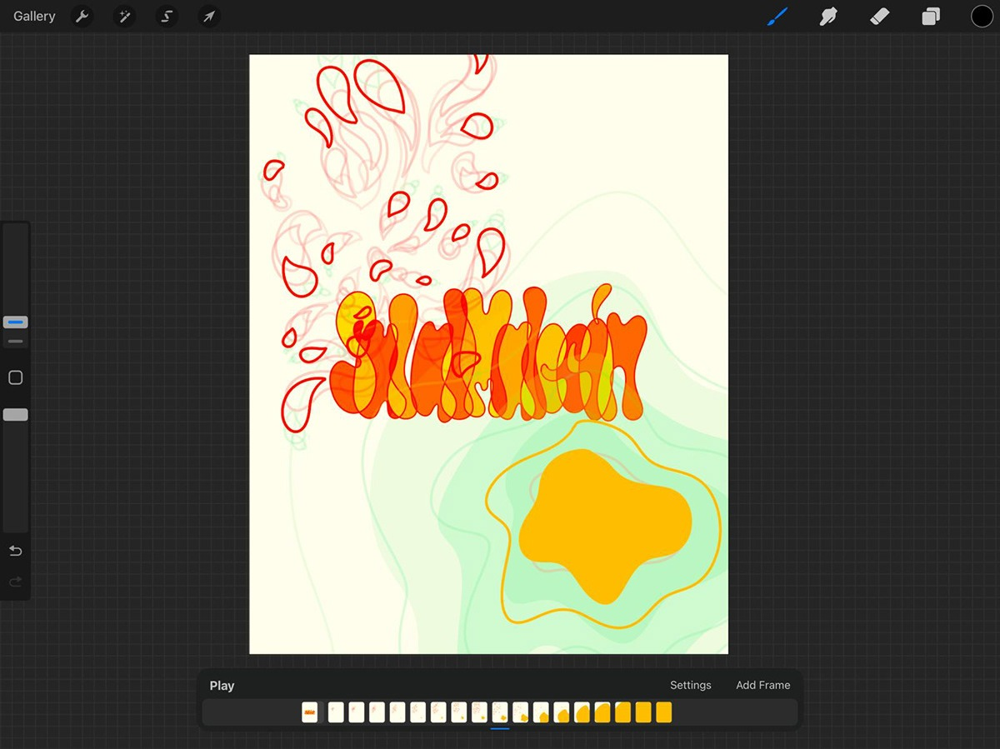
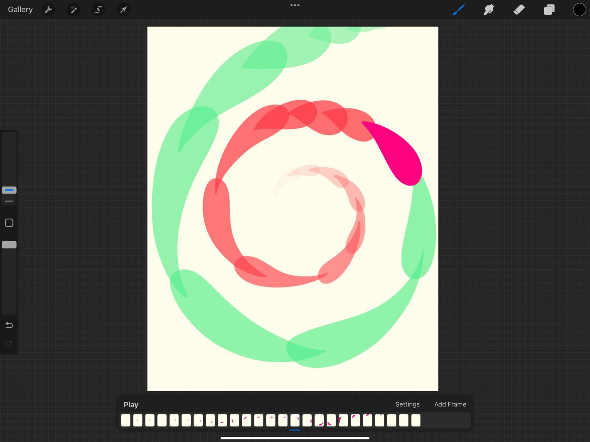
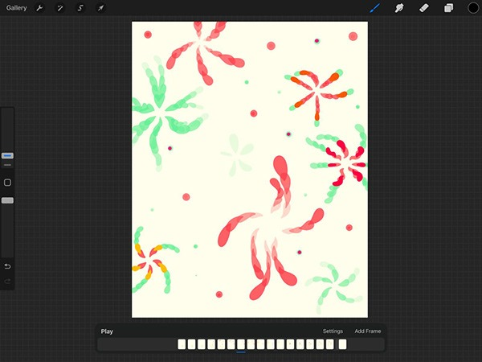
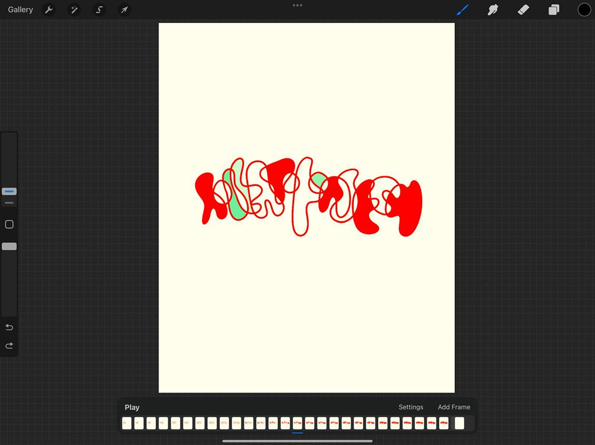
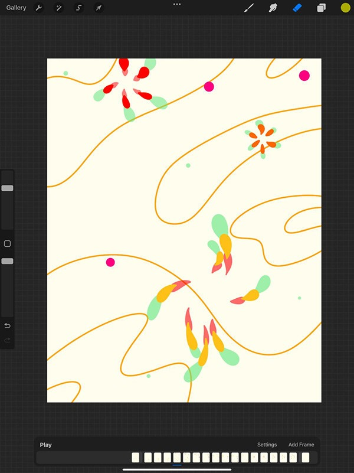
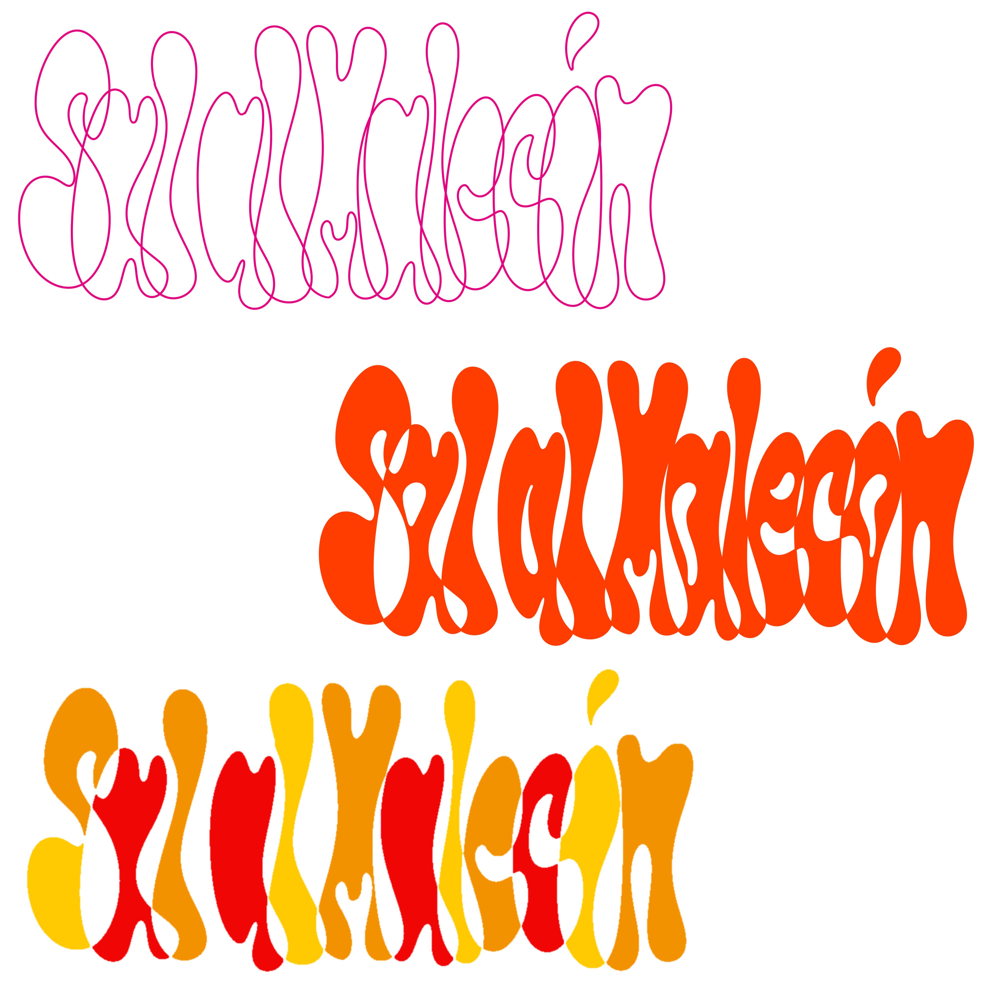
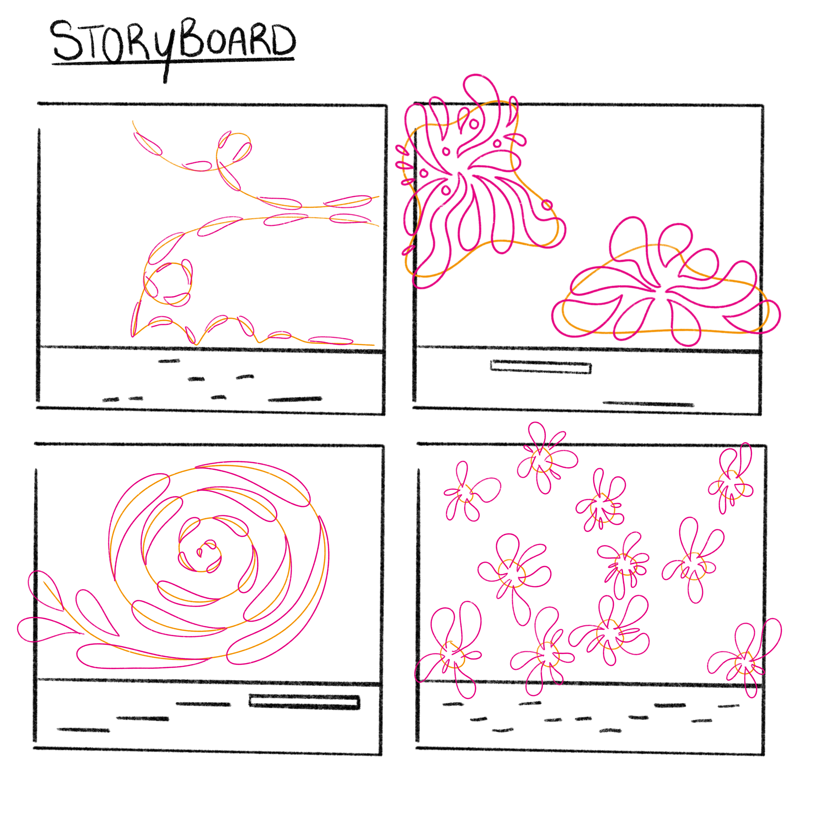

Voor het tweede deel van het vak Vormgeving 2 heb ik een visual gemaakt voor het lied Sal al Malecón. Na het lied aandachtig te hebben geluisterd heb ik een kernwoord gekozen waar ik me op wil focussen bij het maken van de visual, namelijk vrij. Ik heb schetsen gemaakt op papier en deze vervolgens uitgewerkt op Procreate. Op Procreate heb ik stap voor stap de animatie uitgewerkt op verschillende frames.
Animatie - Sal al Malécon
Informatie
- Opdrachtgever:
- HVA, studiejaar 2
- Vak:
- Vormgeving 2
- Docent:
- Stef Kolman
- Cijfer:
- 10
Wat heb ik geleerd?
- Een nieuwe manier van kijken naar een opdracht.
- Niet te veel bezig zijn met het concretiseren van een opdracht, maar het stap voor stap benaderen.
- Hoe ik verschillende losse animaties samen kan voegen tot één geheel.
- Hoe ik een gevoel kan uitdrukken in een animatie of illustratie.
Gebruikte skills
Procreate, Adobe After Effects






